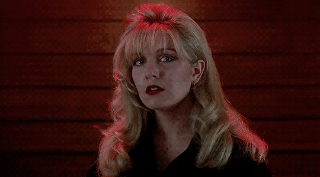

Laura Palmer's harrowing final days are chronicled one year after the murder of Teresa Banks, a resident of Twin Peaks' neighboring town.Synopsis from IMDB
Weirdly specific viewing experience: Watched last summer around midnight while eating spaghetti